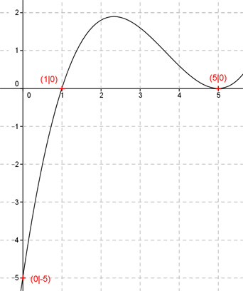

Aufgabe 24 Der Graph einer ganzrationalen Funktion 3. Grades geht durch die Punkte (0|-5) und (1|0) und hat bei (5|0) einen Berührpunkt. Wie lautet seine Funktionsgleichung?  Allgemeine Form einer ganzrationalen Funktion 3. Grades: f(x) = ax3 + bx2 + cx + d f’(x) = 3ax2 + 2bx + c f’’(x) = 6ax + 2b 4 Bedingungen: 1. Geht durch den Punkt (0|-5) bedeutet: f(0) = -5 --> a * 03 + b * 02 + c * 0 + d = -5 --> d = -5 2. Geht durch den Punkt (1|0) bedeutet: (d = -5 eingesetzt): f(1) = 0 --> a * 13 + b * 12 + c * 1 - 5 = 0 --> a + b + c - 5 = 0 I 3. Hat bei (5|0) einen Berührpunkt bedeutet zum einen: (d = -5 eingesetzt): f(5) = 0 --> a * 53 + b * 52 + c * 5 - 5 = 0 --> 125a + 25b + 5c - 5 = 0 II 4. Hat bei (5|0) einen Berührpunkt bedeutet zum anderen: f’(5) = 0 --> 3a * 52 + 2b * 5 + c = 0 --> 75a + 10b + c = 0 III I * (-1) + III -a - b - c + 5 = 0 75a + 10b + c = 0 ------------------------ 74a + 9b + 5 = 0 |-5 74a + 9b = -5 IV III * (-5) + II -375a - 50b - 5c = 0 125a + 25b + 5c - 5 = 0 ------------------------ -250a - 25b - 5 = 0 |5 -250a - 25b = 5 V IV * 25 + V * 9 1850a + 225b = -125 -2250a - 225b = 45 --------------------- -400a = -80 |:400 a = 0,2 a = 0,2 in IV eingesetzt: 74 * 0,2 + 9b = -5 14,8 + 9b = -5 |-14,8 9b = -19,8 |:9 b = -2,2 a = 0,2 und b = -2,2 in I eingesetzt: 0,2 - 2,2 + c - 2,2 - 5 = 0 c - 7 = 0 |+7 c = 7 Gesuchte Funktionsgleichung: f(x) = 0,2x3 -2,2x2 + 7x - 5